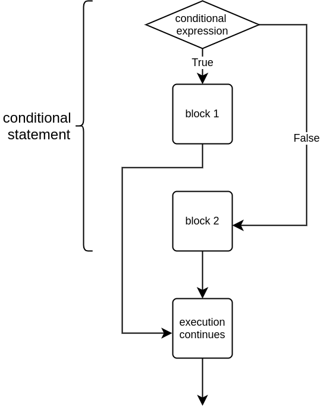
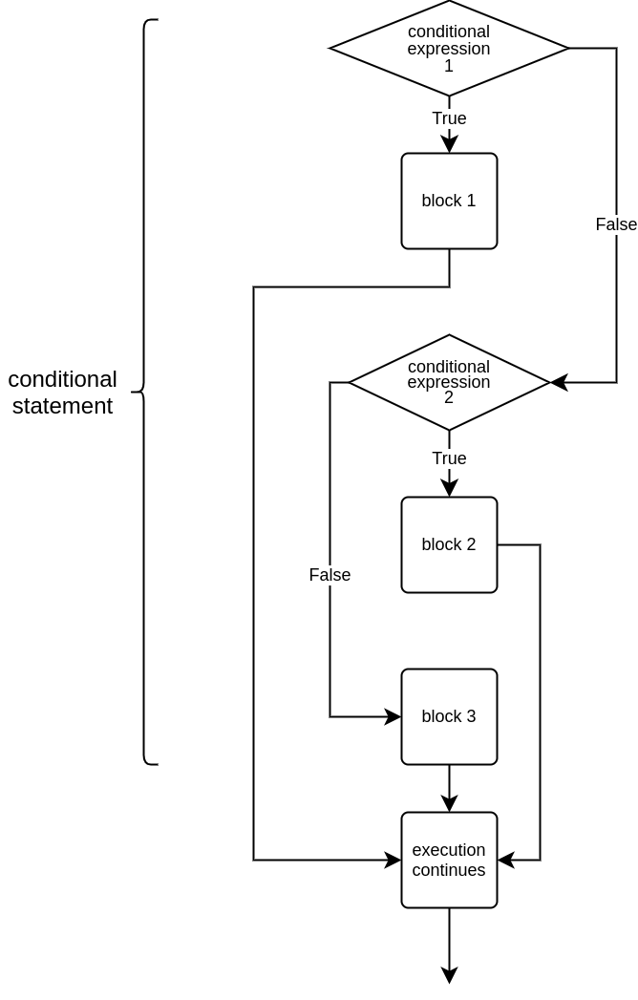

Let’s have a look at a program which asks the user to input a number, and then prints out different messages based on whether the number is negative, positive, or equal to zero:
number = int(input("Please type in a number: "))
if number < 0:
print("The number is negative")
if number >= 0:
print("The number is positive or zero")
This looks a bit clumsy and repetitive. We only ever want to execute one of the if blocks, because the input will always be either below zero, or zero or above. That is, either number < 0 or number >= 0 is true, but never both at the same time. So, the first conditional statement actually contains all we need here. If it is true, the number is negative. If it is false, the number equals zero or is positive.
Instead of creating a whole another conditional statement, as in the example above, it is possible to create another branch of the same conditional statement to cover all cases where the condition was false. This is called the else statement.
The previous example rewritten:
number = int(input("Please type in a number: "))
if number < 0:
print("The number is negative")
else:
print("The number is positive or zero")
When using an if-else construction, one and exactly one of the branches will always be executed. The following picture illustrates the structure:

NB: there can never be an else branch without an if branch before it. The if-else construction as a whole forms a single conditional statement.
The following example checks whether a number given by the user is even or not. Parity can be checked with the modulo operator %, which produces the remainder of an integer division operation. When divided by two, if the remainder is zero, the number is even. Otherwise the number is odd.
number = int(input("Please type in a number: "))
if number % 2 == 0:
print("The number is even")
else:
print("The number is odd")
Another example with string comparison:
correct = "kittycat"
password = input("Please type in the password: ")
if password == correct:
print("Welcome")
else:
print("No admittance")
With two different inputs this should print out:
Often there are more than two options the program should account for. For example, the result of a football match could go three ways: home wins, away wins, or there is a tie.
A conditional statement can be added to with an elif branch. It is short for the words “else if”, which means the branch will contain an alternative to the original condition. Importantly, an elif statement is executed only if none of the preceding branches is executed.

Let’s have a look at a program which determines the winner of a match:
goals_home = int(input("Home goals scored: "))
goals_away = int(input("Away goals scored: "))
if goals_home > goals_away:
print("The home team won!")
elif goals_away > goals_home:
print("The away team won!")
else:
print("It's a tie!")
This program could print out three different statements given different inputs:
In the above example there are three alternative branches, exactly one of which will always be executed. However, there is no limit to the number of elif branches a conditional statement can contain, and the else branch is not mandatory.
This is also a valid conditional statement:
print("Holiday calendar")
date = input("What is the date today? ")
if date == "Dec 26":
print("It's Boxing Day")
elif date == "Dec 31":
print("It's Hogmanay")
elif date == "Jan 1":
print("It's New Year's Day")
print("Thanks and bye.")
Notice the previous example has no else branch. If the user inputs a date which is not mentioned in any of the if or elif branches, or inputs a date in a different format, none of the three branches of the conditional statement is executed.